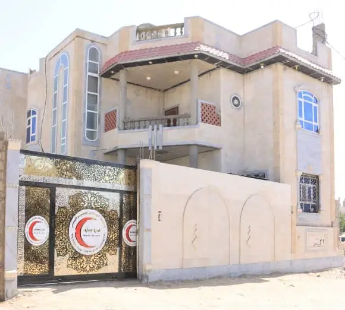
جمعية إنسانية وطنية غير متحيزة ومحايدة ومستقلة، تعمل في محافظة مأرب مساندةً للجهات الرسمية في تخفيف المعاناة الإنسانية منذ عام 2013. An impartial, neutral and independent national humanitarian organization serving Marib Governorate as an auxiliary to public authorities since 2013.
الهلال الأحمر اليمني جمعية غير متحيزة ومحايدة ومستقلة، تأسست عام 1968 وتعمل في أرجاء اليمن مساندةً للجهات الرسمية في الخدمات الإنسانية. The Yemen Red Crescent Society is an impartial, neutral and independent humanitarian organization, established in 1968 and auxiliary to public authorities nationwide.
تأسس فرع محافظة مأرب عام 2013، ويمارس أعماله الإغاثية والطبية وفق الدستور اليمني واتفاقيات جنيف والمبادئ الأساسية للحركة الدولية للصليب الأحمر والهلال الأحمر، استجابةً للاحتياجات الإنسانية المتزايدة في المحافظة. The Marib Branch was established in 2013, operating in accordance with the Yemeni Constitution, the Geneva Conventions, and the Fundamental Principles of the International Movement to address growing humanitarian needs across the governorate.
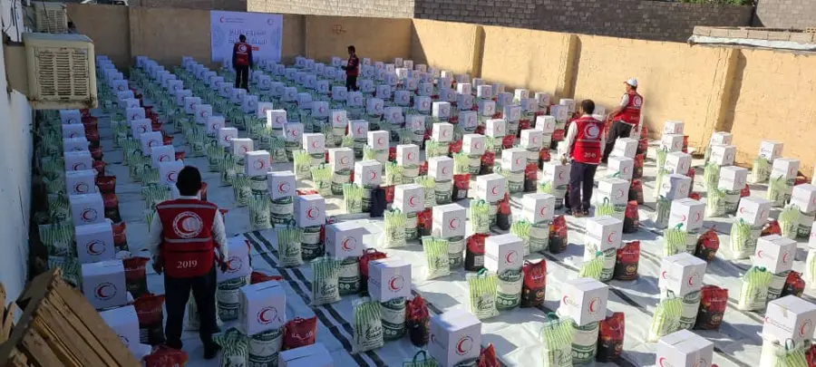
البوصلة الإنسانية التي تقود خططنا واستجابتنا في الميدان The humanitarian compass guiding our plans and field response
حماية أرواح وكرامة المتضررين من النزاعات والكوارث والأزمات، وتقديم العون الطبي والإغاثي الضروري لهم قبل الأزمات وأثناءها وبعدها، دون تمييز أو انحياز. To protect the lives and dignity of victims of conflict and disasters, providing vital healthcare and relief assistance before, during, and after crises without discrimination.
مجتمع أكثر صموداً في محافظة مأرب، تُصان فيه كرامة الإنسان، وتتوفر فيه خدمات صحية وإسعافية آمنة، ويصل فيه العون الإنساني الموثوق إلى كل محتاج ومستضعف. A resilient community across Marib Governorate where human dignity is safeguarded, emergency healthcare is accessible, and humanitarian assistance reaches all vulnerable individuals.
المبادئ الثابتة التي تجمع الحركة الدولية للصليب الأحمر والهلال الأحمر في العالم The core principles unifying the International Red Cross & Red Crescent Movement worldwide
وُلد الهلال الأحمر من الرغبة في إغاثة الجرحى بلا تمييز؛ نسعى لحماية الحياة والصحة وضمان احترام كرامة الإنسان، وتعزيز التفاهم والتعاون والسلام الدائم بين الشعوب. Born of a desire to bring assistance without discrimination to the wounded, we strive to prevent and alleviate human suffering, protecting life, health, and ensuring respect for dignity.
لا نُميّز بين الناس حسب القومية أو العرق أو الدين أو الانتماء السياسي؛ المعيار الوحيد هو شدة الحاجة الإنسانية.No discrimination as to nationality, race, religious beliefs or political opinions; guided solely by human need.
نمتنع عن الانحياز في النزاعات المسلحة أو الدخول في أي جدل سياسي أو ديني أو فكري، للحفاظ على ثقة الجميع.To continue to enjoy the confidence of all, the Movement does not take sides in hostilities or controversies.
الجمعية مستقلة تماماً في قرارها الإنساني، مع الحفاظ على استقلاليتها الدائمة عن أي تدخل خارجي.The Movement is independent. Auxiliaries must maintain autonomy to act in accordance with Movement principles.
حركة إغاثية تطوعية تعمل بدافع العطاء الإنساني الخالص ولا تسعى بأي شكل إلى تحقيق أي ربح.It is a voluntary relief movement not prompted in any manner by desire for gain.
لا يمكن أن توجد إلا جمعية واحدة فقط للهلال الأحمر في البلد الواحد، وهي مفتوحة للجميع في كافة أرجائه.There can be only one Red Cross or Red Crescent Society in any one country, open to all and active across its territory.
حركة دولية تتمتع فيها كافة الجمعيات الوطنية بحقوق وواجبات متساوية وتتشارك المسؤولية في مساعدة الإنسان.An international movement in which all Societies have equal status and share equal responsibilities.
برامج متكاملة لتلبية الاحتياجات الإنسانية الأساسية والطارئة في مأرب Integrated programs addressing core and emergency humanitarian needs in Marib
تقديم خدمات وقائية وعلاجية وصرف أدوية مجانية عبر مركز الهلال الطبي والمخيمات الطبية المتنقلة للمجتمع والنازحين.Free preventive, diagnostic and curative services through Al-Hilal Medical Center and mobile health clinics.
استجابة سريعة على مدار الساعة، ونقل المصابين والمرضى بسيارات إسعاف مجهزة (بما فيها العناية المركزة) داخل المحافظة وخارجها.24/7 rapid response and casualty transport via specialized intensive care ambulances within and beyond Marib.
البحث عن المفقودين، تيسير التواصل بين العائلات المشتتة جراء النزاع، ولمّ الشمل، وإدارة الجثامين وحفظ كرامتها.Tracing missing persons, reuniting separated families, and humanitarian management of human remains.
حملات توعوية مجتمعية ومدرسية بمخاطر الألغام ومخلفات الحرب غير المنفجرة لإنقاذ أرواح المدنيين والأطفال.Mine risk education and awareness campaigns in schools and IDP communities to save civilian lives.
تقديم مساعدات نقدية متعددة الأغراض وقسائم لتلبية الاحتياجات العاجلة للأسر المتضررة والنازحة بكرامة واستقلالية.Multipurpose cash and voucher distributions empowering affected families to meet immediate needs with dignity.
توزيع السلال الغذائية الطارئة والمواد الإيوائية ودعم صمود الأسر الأشد ضعفاً ومساندتهم في استعادة سبل عيشهم.Emergency food basket distributions, shelter kits, and livelihood resilience support for vulnerable households.
بنية تحتية ومعدات ميدانية تُمكّن الفرع من سرعة الاستجابة والوصول الفعّال Field infrastructure and logistics enabling rapid response and effective humanitarian outreach
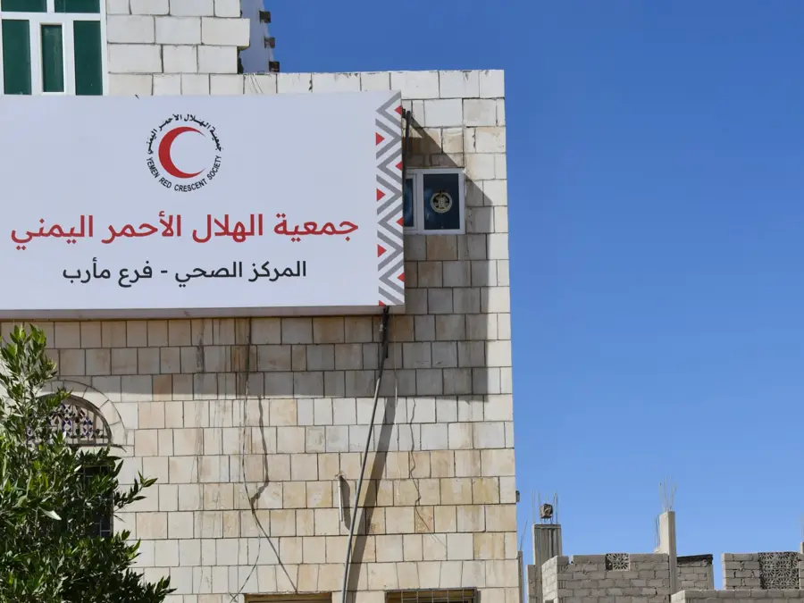
منشأة الرعاية الصحية الأساسية المعتمدة التي تقدم خدمات التشخيص والعلاج المجاني لآلاف المستفيدينOperational healthcare center providing free diagnostics, primary care, and pharmacy to thousands of beneficiaries
مقر إدارة وتنسيق العمليات الإنسانية وغرف العمليات الميدانيةCommand center for coordinating humanitarian operations
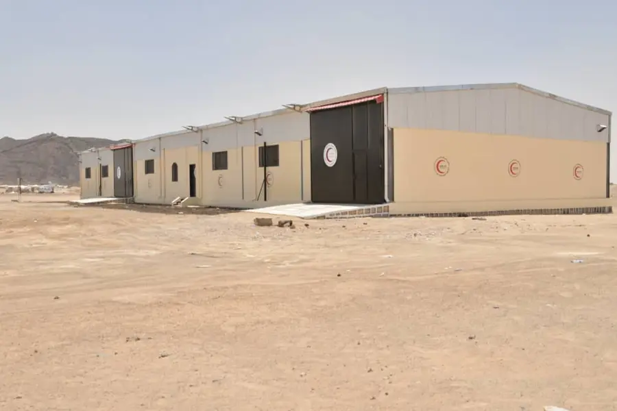
مستودع استراتيجي لاستقبال وتخزين الشحنات الإغاثية والطبيةStrategic logistics hub for receiving and dispatching relief goods
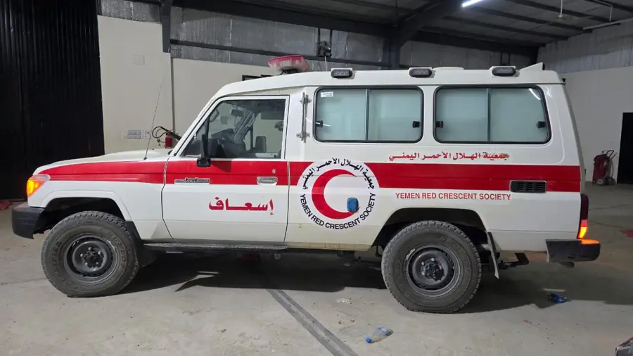
جاهزية مستمرة مع 3 سيارات مخصصة للعناية المركزةRound-the-clock readiness including 3 intensive care units
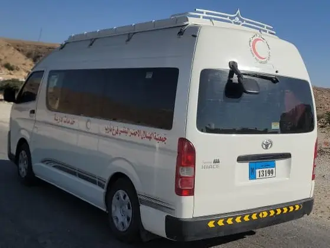
تأمين وصول الفرق التطوعية إلى مواقع الاستجابة الميدانيةFacilitating volunteer team deployment across Marib
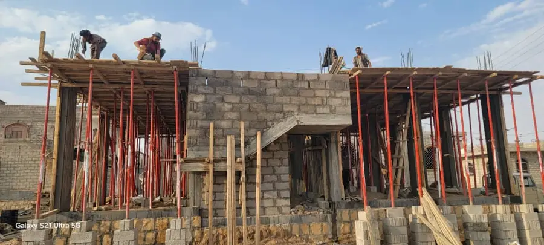
صرح تعليمي وتدريبي متقدم لتأهيل كوادر الإسعاف والعمل الإنسانيDedicated facility to train healthcare and emergency personnel
نماذج موثقة من استجابة الفرع لاحتياجات المتضررين والنازحين في مأرب Documented evidence of our response to the needs of displaced & affected communities
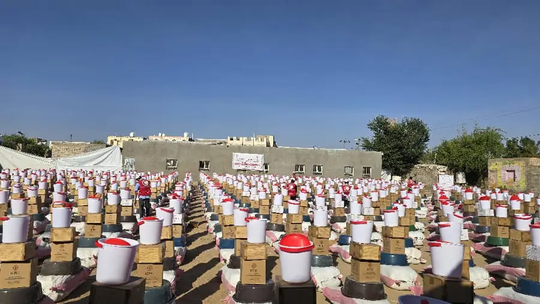
تأمين مستلزمات الإيواء ومواد المعيشة الأساسية للأسر النازحة حديثاً بمخيمات مأرب.Providing essential shelter kits and household items for newly displaced families.
تغطية الاحتياج التغذوي للأسر المتضررة والنازحين عبر توزيع دوري للمساعدات الغذائية.Addressing household nutritional needs through periodic food distributions.
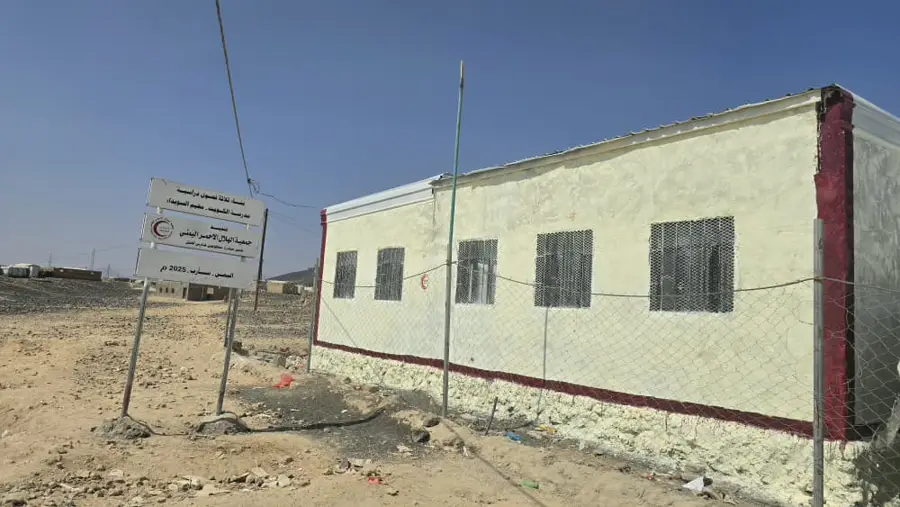
مساندة تعليم الأطفال في المخيمات من خلال بناء وتأهيل فصول دراسية بديلة.Supporting children's access to education in displacement settlements.
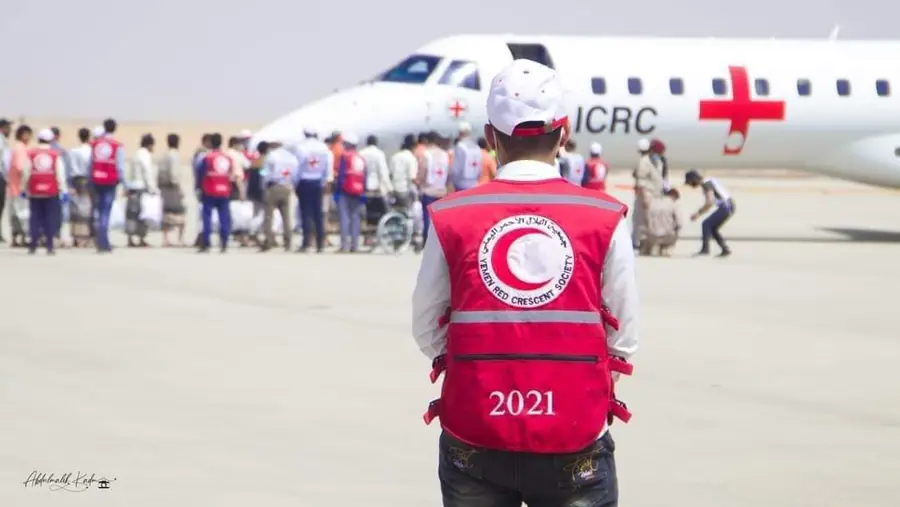
تقديم الفحوصات الطبية والرعاية الأولية وتيسير عودتهم إلى ذويهم في إطار العمل الإنساني المحايد.Neutral humanitarian medical screening and reception of released detainees.
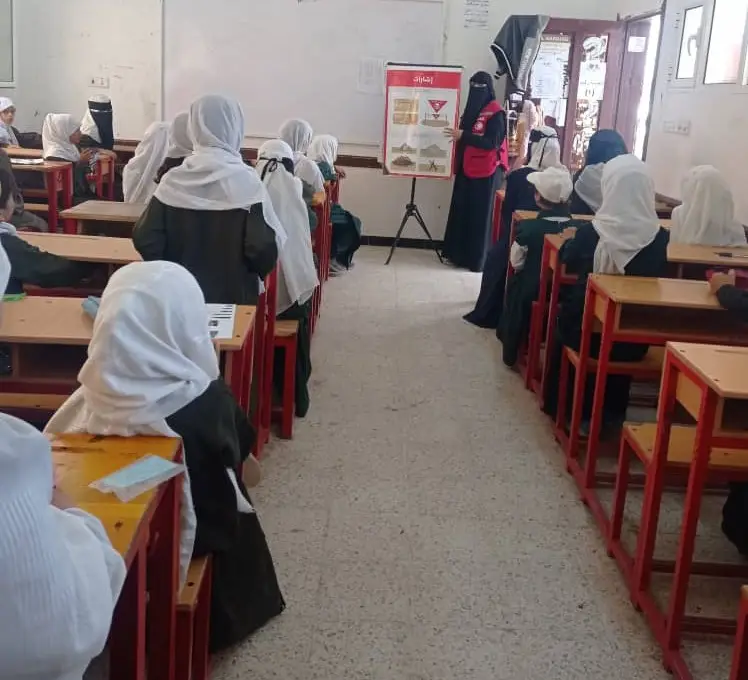
جلسات توعية وتوزيع مطبوعات إرشادية في المدارس والتجمعات لحماية الأطفال والمدنيين.Life-saving sessions in schools and camps on identifying and reporting explosive hazards.
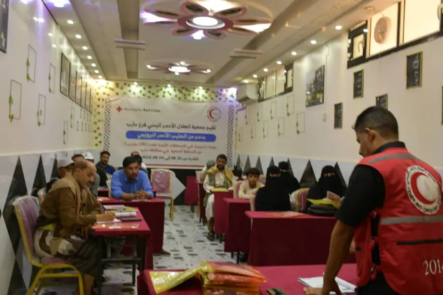
تأهيل الكوادر المجتمعية وفرق الاستجابة على مهارات الإنقاذ السريع وتضميد الإصابات.Equipping community members and volunteers with essential life-saving skills.
شراكات وثيقة تجمعنا بمكونات الحركة الدولية والجهات الرسمية والصحية لخدمة مأرب Strategic partnerships with Movement components, authorities, and hospitals serving Marib
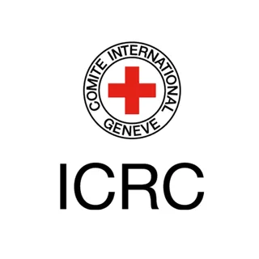
اللجنة الدولية للصليب الأحمر ICRC
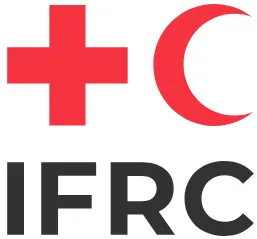
الاتحاد الدولي للصليب الأحمر والهلال الأحمر IFRC
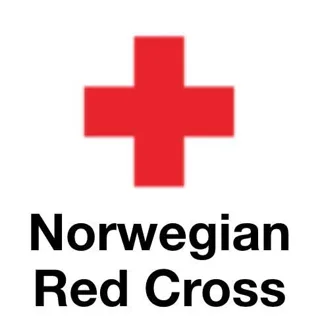
الصليب الأحمر النرويجي Norwegian Red Cross
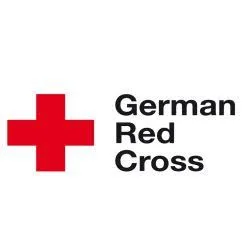
الصليب الأحمر الألماني German Red Cross
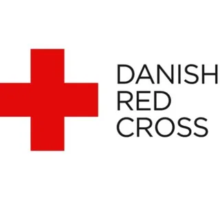
الصليب الأحمر الدنماركي Danish Red Cross
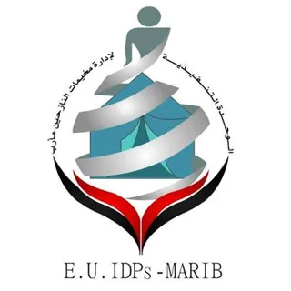
الوحدة التنفيذية لإدارة مخيمات النازحين Executive Unit for IDP Camps
مكتب الصحة العامة والسكان بمأرب Marib Public Health Office
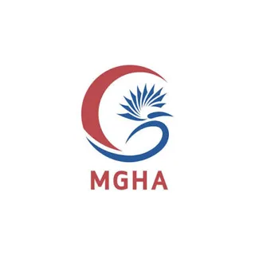
هيئة مستشفى مأرب العام Marib General Hospital Authority
مستشفى العطير الخيري – حريب Al-Atir Charity Hospital – Harib
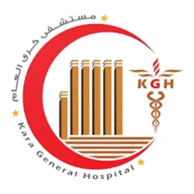
مستشفى كرى العام Kara General Hospital
يسعدنا تواصلكم واستقبال استفساراتكم وتنسيق الشراكات الإنسانية We welcome your inquiries and look forward to coordinating humanitarian partnerships
يمكنكم الوصول مباشرة إلى موقع إدارة الفرع عبر خرائط Google أو متابعة أنشطتنا الميدانية اليومية عبر فيسبوك. Navigate directly to our branch headquarters via Google Maps or follow our ongoing field response on Facebook.